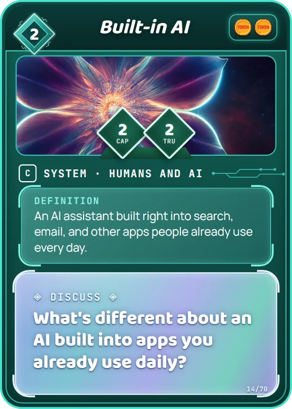

Humans and AI
An AI assistant built right into search, email, and other apps people already use every day.
Autocomplete in a search bar and suggested replies in email are AI built into tools you already use.
Look at one app on a phone or computer. Find one feature that's probably AI. How can you tell?
What's different about an AI built into apps you already use daily?
It costs 2 Data to play, and you can put it in your Training Set. It has Capability 2 (how hard it hits) and Trust 2 (how many Flags it can take), and scores 2 Tokens each time it Runs a Task. How to play